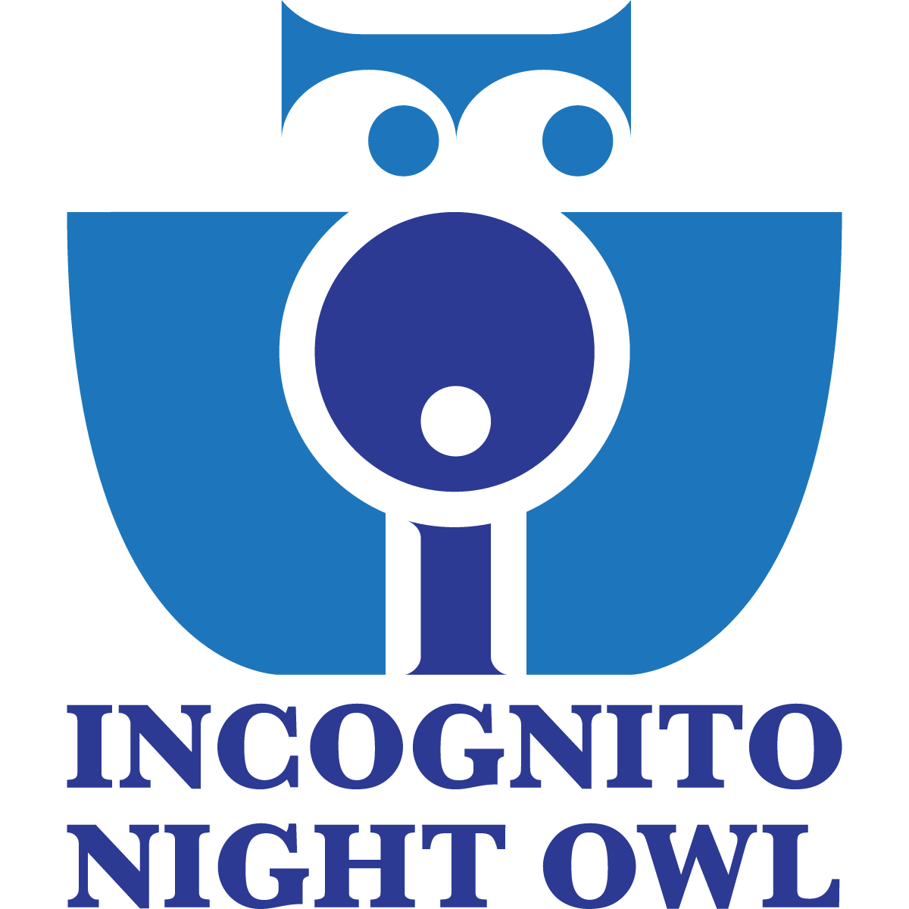

Category: Without AI

INCOGNITO NIGHT OWL
Concept Branding
Adobe Creative Suite
Logo Design
Branding
Typography
portfolio.jmerrell.online
2002 - Present
Category: Without AI

Adobe Creative Suite
Logo Design
Branding
Typography
Category: With AI

Competency 1
Competency 2
Competency 3
Competency 4
Category: Without AI
Competency 1
Competency 2
Competency 3
Competency 4
I am currently a student at BYU-Idaho, pursuing a path in web design and development while building a foundation in graphic design, illustration, and digital creativity. My goal is to grow into a career where I can combine visual storytelling with technology to create meaningful, user-focused experiences. I am actively seeking an internship where I can continue learning, contribute my skills, and gain real-world experience in the design and development field.
My interest in this work has grown out of a love for both creativity and problem-solving. As a web designer and developer, I enjoy thinking about how a page should look, feel, and function for the people using it. I am especially drawn to projects that balance strong visual identity with thoughtful usability. Through my studies and personal work, I have developed an appreciation for the process of turning ideas into polished digital experiences that communicate clearly and leave a lasting impression.
I also believe my path has been shaped by personal guidance and support from those around me. My family has played a big role in helping me reach this point, and I have felt that my interests and direction have been influenced by faith and spiritual guidance. The Holy Ghost has helped me recognize the importance of creativity, service, and intentional work, and those influences continue to guide me as I move toward a career that aligns with my strengths and values.
I was raised in Washington State and graduated from Selah High School. I am 24 years old, and my life has been shaped by the values of family, faith, and meaningful connection. Growing up, I learned the importance of spending time with the people I love and being present in the moments that matter most. Some of my favorite memories come from large family reunions, especially the reunions on both my mother's and father's sides of the family. The traditions, stories, and laughter from those gatherings helped shape my sense of belonging and rooted me in the importance of family history and togetherness.
One of the places that stands out most in my memories is Lost Lake in Oregon, where my father's extended family used to gather for reunions. Those experiences created lasting traditions and gave me a deeper appreciation for the relationships that connect us across generations. I am also a member of the Church of Jesus Christ of Latter-day Saints, and my faith continues to influence how I approach work, creativity, and relationships. I believe my values help me approach life with patience, purpose, and a desire to keep learning and improving.
In my life today, I am balancing school, personal growth, and the responsibilities of marriage. I have a wife, and our life together has taught me the value of partnership, support, and perseverance. These experiences remind me that creativity and work are not only about personal goals but also about the people we serve and the lives we build around them. That perspective continues to shape how I want to design, write, and create with intention.